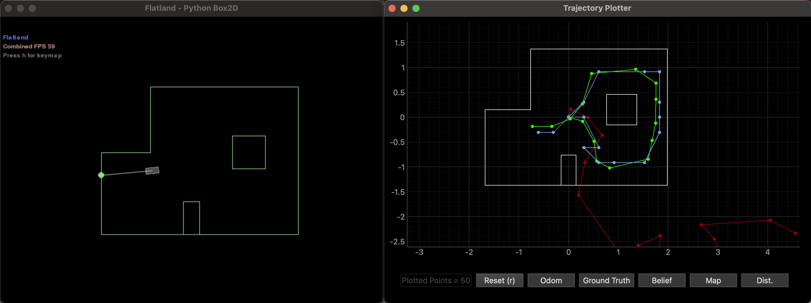
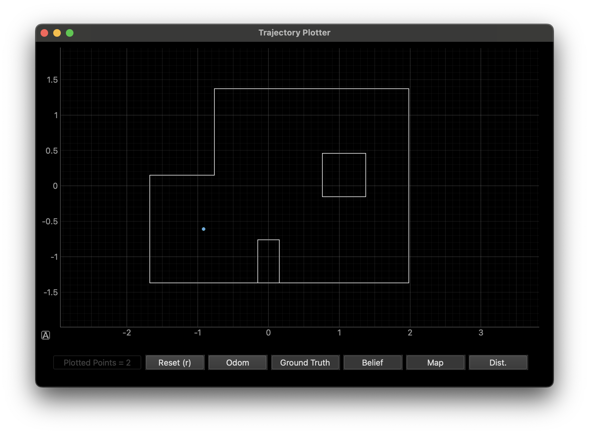
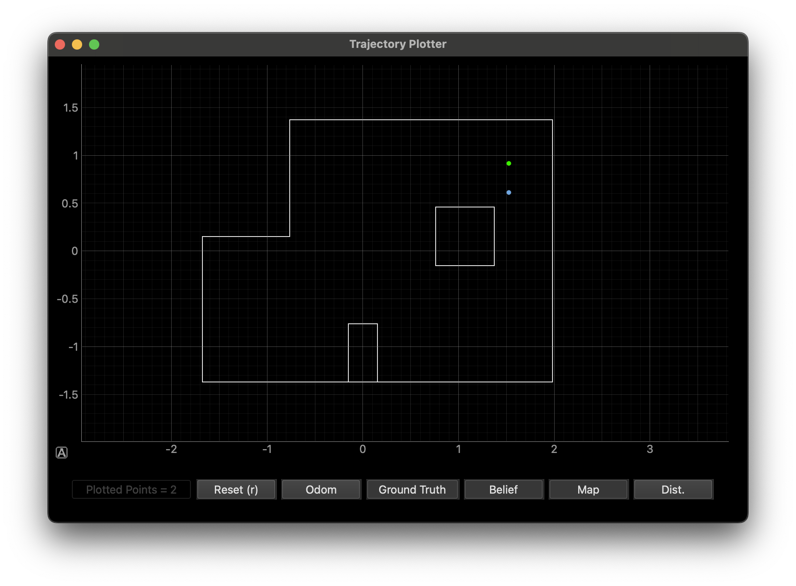

Objective
This lab takes the Bayes filter from Lab 10 and runs it on the real robot. The big difference is that we only run the update step. In simulation, the prediction step was useful because the virtual robot's odometry was noisy but still somewhat informative. On the real robot, the motors are so inconsistent that odometry predictions would actually make things worse. So the approach is simpler: place the robot at a known position, have it spin and collect 18 ToF readings, and see if the update step alone can figure out where it is purely from what it sees.
Simulation Test
Before touching the real robot, I ran the provided optimized Bayes filter in simulation using lab11_sim.ipynb to confirm everything works. The belief (blue) tracks ground truth (green) closely, which gave me confidence that the localization code is correct before introducing real-world sensor noise.

Green = ground truth, Red = odometry, Blue = belief.
Implementation
Arduino Changes
I reused my MAP_SCAN BLE command from Lab 9, which uses orientation PID to spin the robot and takes a front ToF reading at each angular increment. My Lab 9 code started readings at the first increment (20 degrees), but localization expects the first reading at 0 degrees. I changed map_target_angle in startMapScan() from map_increment to 0, and updated the angle advancement in runMapStep() accordingly. The robot now takes readings at 0, 20, 40, ... 340 degrees.
PID gains are Kp=9.0, Ki=0.0, Kd=0.52 (same as Lab 9). The settle time is 500ms per reading, which I found necessary to let the robot stop oscillating before taking a measurement.
Observation Loop
The perform_observation_loop function handles the BLE communication. It sets up a notification handler that parses incoming sensor readings in the format MAP:A:<angle>|D1:<tof1_mm>|D2:<tof2_mm>, storing just the angle and front ToF distance (D1). I only use the front sensor since the localization model expects one range measurement per direction. The handler also tracks status messages like MAP_DONE to detect when the scan is complete. After sending MAP_SCAN with parameters 20|18, I wait for completion, then call GET_MAP_LOG to retrieve all readings. The readings are sorted by angle, converted from mm to meters, and returned as a numpy column array. Invalid readings (where the ToF returns -1) are filtered out during post-processing since the localization code only needs valid distance values.
def perform_observation_loop(self, rot_vel=120):
map_angles = []
map_tof1 = []
map_status = []
# BLE handler: parse sensor readings, track scan status
def map_handler(uuid, bytearray_data):
data = bytearray_data.decode('utf-8')
if data.startswith("MAP:A:"):
try:
a_str = data[data.find("A:")+2 : data.find("|D1:")]
d1_str = data[data.find("D1:")+3 : data.find("|D2:")]
map_angles.append(float(a_str))
map_tof1.append(int(d1_str))
except Exception as e:
print(f"Parse error: {e}")
else:
map_status.append(data)
print(data)
self.ble.start_notify(self.ble.uuid['RX_STRING'], map_handler)
# Set orientation PID gains (tuned in Lab 9)
self.ble.send_command(CMD.SET_PID_GAINS, "9.0|0.0|0.52")
time.sleep(1)
# Start scan: 18 readings at 20 degree increments
self.ble.send_command(CMD.MAP_SCAN, "20|18")
print("Scan started: 20 deg x 18 readings")
# Wait for scan to finish
t0 = time.time()
while time.time() - t0 < 60:
if any("MAP_DONE" in s for s in map_status):
print("Scan finished!")
break
time.sleep(1)
else:
print("WARNING: scan timed out")
time.sleep(2)
# Retrieve logged data
self.ble.send_command(CMD.GET_MAP_LOG, "")
print("Requesting map log...")
time.sleep(10)
self.ble.stop_notify(self.ble.uuid['RX_STRING'])
print(f"Received {len(map_tof1)} readings")
# Sort by angle, convert mm to meters
if len(map_tof1) >= 18:
paired = sorted(zip(map_angles, map_tof1), key=lambda x: x[0])
distances_mm = [d for _, d in paired[:18]]
else:
distances_mm = map_tof1
distances_m = []
for d in distances_mm:
if d > 0:
distances_m.append(d / 1000.0)
else:
distances_m.append(0) # fallback for invalid readings
sensor_ranges = np.array(distances_m)[np.newaxis].T
sensor_bearings = np.array([])[np.newaxis].T
return sensor_ranges, sensor_bearingsResults
I placed the robot at each of the four marked positions facing 0 degrees (along +x), ran the scan, and compared the filter's belief to the known ground truth.
| Position (ft) | Ground Truth (m) | Belief (m, m, deg) | XY Error (m) | Prob |
|---|---|---|---|---|
| (-3, -2) | (-0.914, -0.610) | (-0.914, -0.610, 10.0) | (0, 0) | 1.00 |
| (0, 3) | (0, 0.914) | (0, 0.914, -10.0) | (0, 0) | 1.00 |
| (5, -3) | (1.524, -0.914) | (1.524, -0.914, -90.0) | (0, 0) | 1.00 |
| (5, 3) | (1.524, 0.914) | (1.524, 0.610, -10.0) | (0, 0.304) | 1.00 |


Analysis
Three out of four positions localized perfectly. I was surprised by how well it worked given that we are only using the update step with no motion information.
The one position that consistently failed was (5, 3), off by one grid cell in y (0.304m). I ran it four times and got the same result every time. This position is in the upper-right area near the top wall, right wall, and interior box. The cell one below at (5, 2) has a very similar view of the surroundings: the right wall and interior box are at about the same distance from both cells. The only real difference is the distance to the top wall (about 1 foot closer from (5, 3)), which may not be enough for the ToF sensor to reliably distinguish.
Several classmates had the same one-cell deviation at (5, 3), including students from prior years. If it were random sensor noise, different robots would fail differently. Everyone getting the same wrong answer suggests either the precached sensor data (obs_views) for that region is slightly off, or the ToF sensor consistently reads shorter/longer at those distances in a way that biases results. Either way, the sensors are impressively consistent across robots. They are all wrong in the exact same way, pointing to a systematic issue rather than random noise.
The positions that worked well are all geometrically distinctive. (-3, -2) is near the step in the left wall, (0, 3) is near the top wall and that same step, (5, -3) is near the bottom-right corner with the rectangular bump. These features create sensor signatures that no other grid cell can replicate.
Acknowledgements
Claude AI was used for assistance in structuring this report. Robot testing, data collection, and localization result analysis were done by me.